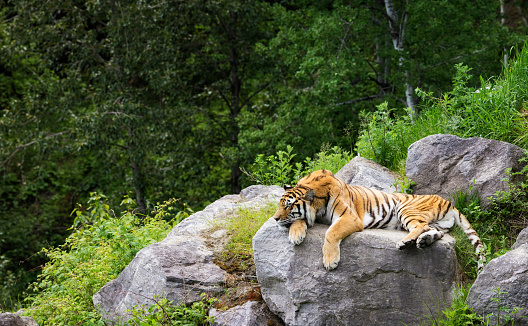

Wildlife and the tiger
The majestic tiger, once the top predator of nearly all of Asia's vast tropical
and temperate forests, today faces a persistent suite of nearly overwhelming dangers in a
vastly diminished range.
Tigers are killed in huge numbers for their skins and bones or in retaliation for conflict
with humans, their prey are killed by skilled hunters to feed an insatiable local luxury
market for 'exotic' bushmeat,
and their remaining forest habitats are relentlessly converted to human uses.
Citeste mai multe despre tigru!
